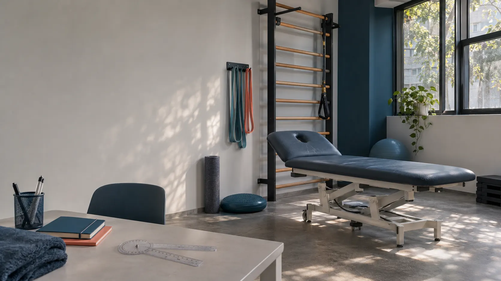

Medimos el rango de cada articulación antes de armar el plan.
Ver servicioFuerza, movilidad y gesto para volver al deporte con criterios claros.
Ver servicioTratamiento de lesiones de músculos, tendones y articulaciones.
Ver servicioElegí un círculo para ver qué hacemos en cada lugar.
¿Qué te molesta? Empecemos por ahí.
Elegí la zona y mirá los motivos de consulta más frecuentes. Después pedís turno en cuatro pasos.
Cuello y hombro, elevación del brazo. El arco coral marca el ángulo que medimos; los grados son de ejemplo.
Motivos de consulta frecuentes
Pedir turnoEspalda, flexión del tronco. El arco coral marca el ángulo que medimos; los grados son de ejemplo.
Cadera, flexión en sentadilla. El arco coral marca el ángulo que medimos; los grados son de ejemplo.
Motivos de consulta frecuentes
Pedir turnoRodilla, extensión sentado. El arco coral marca el ángulo que medimos; los grados son de ejemplo.
Motivos de consulta frecuentes
Pedir turnoTobillo y pie, flexión dorsal contra la pared. El arco coral marca el ángulo que medimos; los grados son de ejemplo.
Codo y mano, flexión del codo. El arco coral marca el ángulo que medimos; los grados son de ejemplo.
Así es la primera consulta.
Una hora para entender qué te pasa, medirlo y decidir juntos cómo seguir.
Charlamos
Nos contás qué te pasa, desde cuándo y qué querés volver a hacer.
Medimos
Registramos cuánto se mueve cada articulación y cuánta fuerza tiene la zona.
Armamos el plan
Te explicamos qué vemos, qué ejercicios proponemos y cuántas sesiones estimamos, y lo acordamos con vos.
Lo que hacemos.
Evaluación de movimiento
Tu primera consulta: charlamos, medimos y armamos el plan.
Kinesiología traumatológica
Tratamiento de lesiones de músculos, tendones y articulaciones.
Rehabilitación posquirúrgica
Seguimiento después de una operación, con la indicación de tu médico.
Readaptación deportiva
Volver al deporte con criterios claros de fuerza, movilidad y gesto.
Quiénes te atienden.
Un equipo chico, con una persona de referencia en todo tu tratamiento.
Lic. Marina Altamirano
Kinesióloga deportiva
Matrícula ficticia 00.001Lic. Joaquín Benavídez
Kinesiología traumatológica y posquirúrgica
Matrícula ficticia 00.002Lic. Sol Ferreyra
Readaptación deportiva y ejercicio terapéutico
Matrícula ficticia 00.003
Cobertura y pagos.
Con tu cobertura
Te damos el comprobante para que presentes el reintegro en tu obra social o prepaga. Antes de tu primera visita te contamos cómo hacerlo.
Sin cobertura
Pagás cada sesión al terminarla. Los valores te los pasamos por WhatsApp cuando pedís turno.
Preguntas frecuentes.
¿Necesito orden médica?
Para la primera consulta no. Si tu cobertura la pide para el reintegro, te avisamos antes de que vengas.
¿Cuánto dura la primera consulta?
Alrededor de una hora: charla, mediciones y explicación del plan.
¿Qué tengo que llevar?
Ropa cómoda para moverte, los estudios o informes que tengas y, si te operaron, la indicación de tu médico.
¿Atienden con obra social o prepaga?
Con reintegro: te damos el comprobante para que lo presentes en tu cobertura. Consultanos antes de venir.
¿Cuántas sesiones voy a necesitar?
Depende de cada caso. Lo definimos con vos después de la evaluación y no prometemos plazos.
¿Cómo cambio o cancelo un turno?
Avisanos por WhatsApp con 24 horas de anticipación y te ofrecemos otro horario.
Elegí un horario que te quede cómodo.
Son cuatro pasos. Después podés cambiar el turno avisando con 24 horas de anticipación.